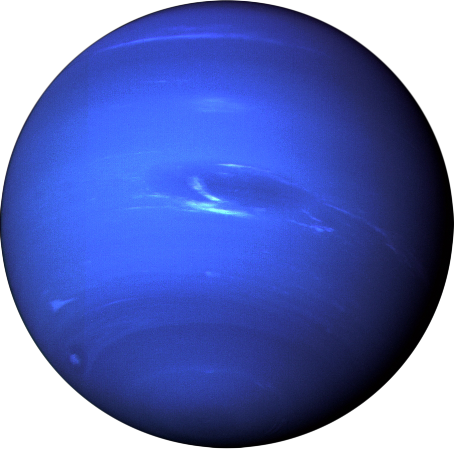

MORE FATCS TO KNOW
- Discovery and Observation:
Neptune was the first planet to be discovered through mathematical predictions rather than direct observation.
- Atmosphere and Weather:
Neptune's atmosphere is known for its dynamic and turbulent weather patterns. It experiences high-speed winds that can reach up to 1,200 miles per hour (1,930 kilometers per hour) in its equatorial region.
- Extreme Cold and Distance:
Neptune is extremely cold due to its great distance from the Sun. Its average temperature hovers around -330 degrees Fahrenheit (-201 degrees Celsius).
- Exploration:
The only spacecraft to visit Neptune up close is NASA's Voyager 2, which passed by the planet in 1989. Voyager 2 provided valuable data about Neptune's atmosphere, rings, and moons.
